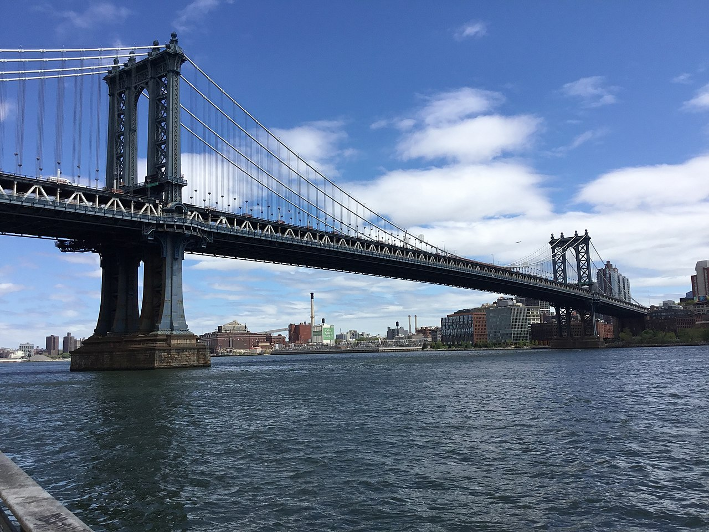
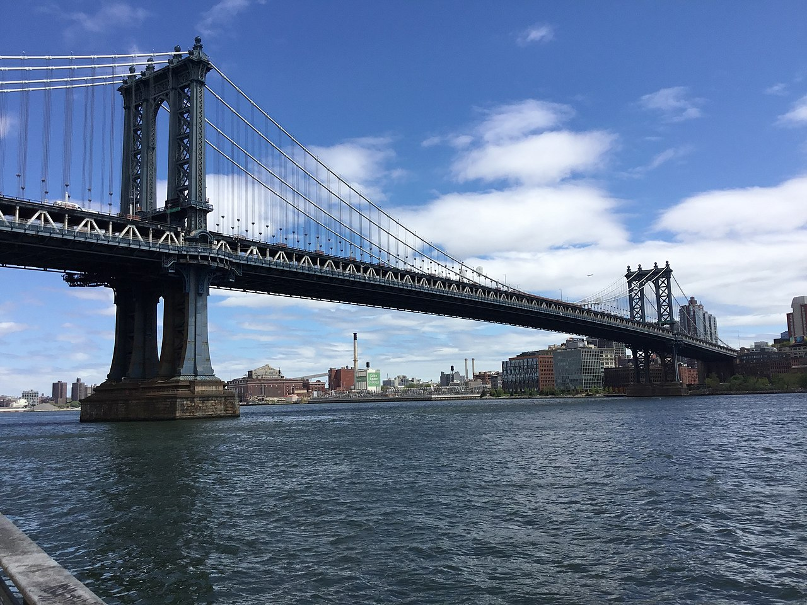

Gradjevini Njujorka
"Činjenica: Nijedan gradski horizont nije toliko ikoničan ili lep kao Njujork. Čikago je možda mesto gde je neboder rođen, a gradovi poput Sijetla i San Franciska imaju prepoznatljive znamenitosti, ali Njujork je mesto gde mogu biti neke od najvažnijih svetskih zgrada - Empire State Building, Chrysler Building..."
Izvor teksta: https://chi-info.com/10-ikonicnih-gradevina-u-njujorku-koje-moras-videti/


 
